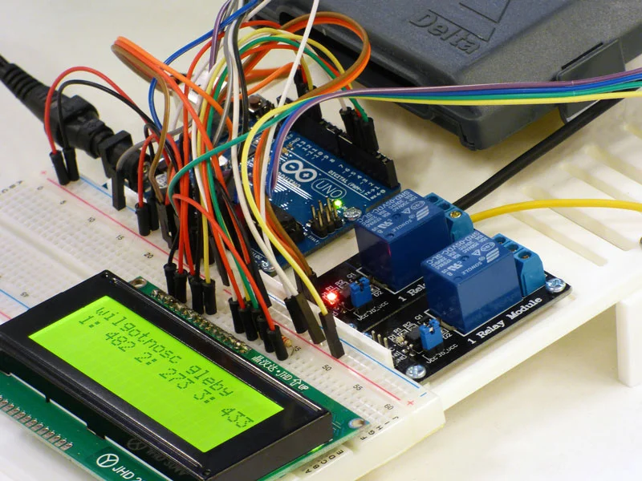

Última publicación
Aquí se publicará el último avance de Bit3.

4 de octubre 2026
Tercera semana del proyecto
Durante la semana del 28 al 4 de octubre se sentaron las bases en arduino para comenzar el proyecto.
Todas las publicaciones
Aquí se publicarán semanalmente los avances y las novedades de Bit3.
4 de octubre 2026
Tercera semana del proyecto
Durante la semana del 28 al 4 de octubre se sentaron las bases en arduino para comenzar el proyecto.

21 de septiembre 2026
Segunda semana del proyecto
Durante esta semana se acabó de definir el proyecto y se dio a conocer delante de la clase.

14 de septiembre 2026
El origen de Bit3: cómo nació este proyecto
El nacimiento de Bit3, declaración de intenciones e identidad visual.